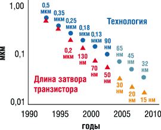
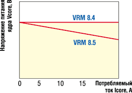
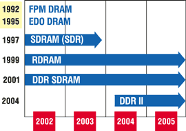
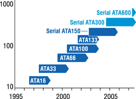

Евгений Рудометов, Виктор Рудометов
rudometov@mail.ru
Производительность компьютеров и их функциональные возможности в значительной степени зависят от параметров элементов, входящих в состав систем. После выбора конфигурации компьютер необходимо оптимально настроить, добиваясь максимальной производительности его элементов и наиболее полной реализации их потенциальных возможностей, причем учитывая не только аппаратные, но и программные компоненты систем.
К сожалению, на этом проблемы специалистов, отвечающих за эксплуатацию компьютеров, не кончаются…
Ограниченность ресурсов
Даже тщательно выбранные, оптимально настроенные, регулярно и аккуратно обслуживаемые аппаратно-программные средства компьютеров не могут долгое время соответствовать постоянно возрастающим требованиям. Связано это с тем, что сложность решаемых задач, а также системных программ и приложений увеличивается. Соответственно растут и их требования к аппаратным ресурсам компьютеров.
В результате рано или поздно пользователи сталкиваются с проблемой недостаточной производительности своих компьютеров. После того как все резервы увеличения производительности за счет надлежащей настройки и всесторонней оптимизации работы аппаратных и программных средств полностью исчерпаны, приходится искать другие пути решения проблемы.
Часть пользователей отказывается от современных операционных систем с их удобными, но расточительными интерфейсами, предпочитая более экономичные (но и более примитивные) программные системы предыдущих поколений. Как результат такого подхода, на компьютере с ограниченными ресурсами эксплуатируются простые, часто устаревшие программы. Правда, необходимо признать, что эти программы нередко бывают довольно эффективны в решении не слишком сложных задач. В качестве примера можно привести популярные программы обработки финансовой информации, написанные еще под DOS и ориентированные на потребности фирм скромных размеров.
Но есть и иной круг пользователей. Идя в ногу с научно-техническим прогрессом, они нередко согласны на замену существующего оборудования. Во многих случаях, решая проблему недостаточной производительности, они готовы приобретать совершенно новые компьютеры, не останавливаясь перед расходами.
Многие же пользователи, стараясь сэкономить, предпочитают провести модернизацию (upgrade) уже существующих систем. При этом они осознают необходимость соответствующих затрат и закупают нужные устройства и/или новейшие компьютерные комплектующие, безжалостно избавляясь от существующих. Затем - либо с помощью специалистов сторонних фирм, либо собственными усилиями - они постепенно обновляют систему. В процессе модернизации устаревшие, критичные комплектующие заменяются на современные, имеющие более высокую производительность и широкие функциональные возможности. Обычно модернизации подвергаются процессор, память, видеоадаптер, жесткий диск.
Отметим, что проблема недостаточной производительности часто касается сравнительно нестарых и прекрасно работающих компьютеров, возможно, купленных всего год-два назад, но не справляющихся со стремительно растущими требованиями прикладного и системного ПО.
К сожалению, оба варианта - приобретение новых компьютеров и модернизация существующих - связаны со значительными финансовыми затратами. Впрочем, признавая все достоинства новых систем, следует отметить, что модернизация в большинстве случаев обходится существенно дешевле, особенно при массовых закупках комплектующих.
Однако на пути модернизации компьютера часто встают непреодолимые проблемы, связанные с развитием технологий, а также улучшением архитектуры как комплектующих, так и всей системы аппаратных средств. Связано это с тем, что быстрый прогресс очень часто не обеспечивает преемственности и совместимости стандартов, интерфейсов и конструкторских решений.
Эволюция технологий и комплектующих
В условиях постоянного развития компьютерных технологий (табл. 1) срок целесообразной эксплуатации узлов и элементов вычислительной техники постоянно сокращается, и в ближайшие годы, как ожидается, этот процесс будет продолжаться столь же высокими темпами. При появлении более качественных и производительных компонентов становится экономически невыгодно эксплуатировать устаревшие прототипы. И это несмотря на совершенствование технологии производства, роста надежности и срока их безаварийной эксплуатации.
Таблица 1. Эволюция технологических процессов Intel
| Процесс | Год внед-рения | Лито-графия, нм | Пластина Si, мм | Межсое-динения | Длина затвора, нм | Диэлект-рик затвора | Канал |
| P854 | 1995 | 350 | 200 | Al | 350 | SiO2 | Si |
| P856 | 1997 | 250 | 200 | Al | 200 | SiO2 | Si |
| P858 | 1999 | 180 | 200 | Al | 130 | SiO2 | Si |
| Px60 | 2001 | 130 | 200/300 | Cu | 70 | SiO2 | Si |
| P1262 | 2003 | 90 | 300 | Cu | 50 | SiO2 | Strained Si |
| P1264 | 2005 | 65 | 300 | Cu | 30 | SiO2 | Strained Si |
| P1266 | 2007 | 45 | 300 | Cu | 20 | High-k | Strained Si |
| P1268 | 2009 | 32 | 300 | Cu | 15 | High-k | Strained Si |
В настоящее время для сложных комплектующих, к которым относятся процессоры, видеоадаптеры и жесткие диски, срок работы в компьютерах составляет в среднем не более 5 лет. Однако многие пользователи еще до истечения данного срока стараются заменить эти, как правило, исправные элементы, на более производительные. Например, многочисленные компьютерные эксперты, в частности, специалисты компании Intel (http://www.intel.com), рекомендуют их замену каждые 2-3 года. В то же время высокая надежность компьютерных элементов, подтвержденная многочисленными испытаниями независимых экспертов, позволяет эксплуатировать их более 10 лет.
Все сказанное прежде всего относится к таким сложным элементам, как центральные процессоры компьютеров.
Процессоры
Как показывают теоретические оценки и практика эксплуатации компьютеров, процессоры способны корректно работать в штатных режимах очень долго, до нескольких десятилетий. В доказательство можно привести многочисленные примеры работоспособности компьютеров с процессорами i8086 и i8088, до сих пор эксплуатируемых в некоторых государственных организациях.
Тем не менее в соответствии с эволюцией полупроводниковых технологических процессов (рис. 1) каждые 3-4 года в структуру ядер процессоров вносятся значительные изменения, позволяющие говорить о новой архитектуре (табл. 2). Стандарты же упаковки полупроводниковых кристаллов, а также процессорных разъемов, через которые эти элементы подключаются к системной плате, меняются много чаще. Новые, все более производительные модели процессоров в рамках одной архитектуры появляются, как правило, каждые несколько месяцев. Причем новые модели процессоров, в архитектуру ядра которых внесли значительные изменения, в ряде случаев оказываются несовместимы с платформами, рассчитанными на предшествующие модели. К сожалению, это происходит даже при сохранении типа корпусировки и процессорного разъема.
|  | Рис. 1. Эволюция полупроводниковой технологии Intel.
|
Таблица 2. Эволюция архитектуры процессоров Intel для настольных ПК
| Процессоры | Разъемы | Год начала выпуска |
| Intel 8086 | -- | 1978 |
| Intel 286 | -- | 1982 |
| Intel 386 | -- | 1985 |
| Intel 486DX | Socket 1/Socket 2/Socket 3/Socket 6 | 1989 |
| Intel Pentium / Pentium MMX | Socket 4/Socket 5/Socket 7 | 1993 |
| Intel Pentium II/ Pentium III | Slot 1/Socket 370 | 1997 |
| Intel Pentium 4 (Willamette, Northwood, Prescott, Tejas...) | Socket 473/Socket 478/Socket T (Socket 775) | 2000 |
Тем не менее есть и хорошо известный пример, иллюстрирующий смену платформы без изменения типа процессорного разъема, - это когда-то очень популярные процессоры Intel Pentium MMX. Эти процессоры, как и выпущенные ранее модели Intel Pentium, были рассчитаны на распространенный в то время разъем Socket 7. Но даже при сохранении типа разъема процессоры Pentium MMX, в отличие от предшественников, требовали, чтобы системные платы обеспечивали два уровня напряжения питания процессорного ядра. Это означает, что фактически новые процессоры - вообще говоря, относящиеся к тому же типу архитектуры P5, - потребовали смены платформы.
К слову сказать, данные процессоры активно используются в промышленных контроллерах, а Intel до сих пор выпускает аналогичные элементы и изделия, рассчитанные на экстремальные условия эксплуатации.
Ускоренная смена платформ происходила и в последующих поколениях процессоров. В массовых моделях на смену разъему Socket 7 и его модификации Super 7 (Super Socket 7) пришел Slot 1, несовместимый с предшественником и потребовавший платформ с соответствующими элементами поддержки. Это опять же привело к новым расходам для пользователей, желающих воспользоваться преимуществами новой и перспективной (конечно, по меркам того времени) архитектуры.
В качестве еще одного примера приведем появление процессоров Intel Pentium III и Celeron на основе ядра Tualatin, выполненных по технологии 130 нм. Эти изделия, как и их 180-нм предшественники с ядром Coppermine, относятся к типу архитектуры P6. Однако у новых процессоров, несмотря на сохранение типа разъема (это был утвердившийся тогда в отрасли стандарт Socket 370), изменился тип электропитания (рис. 2). Для них на системных платах требовался новый преобразователь напряжения - модуль VRM (Voltage Regulator Module), вырабатывающий напряжение питания ядра. Этот модуль, удовлетворяющий спецификации версии 8.5 (VRM 8.5), призван был заменить VRM 8.4, применявшийся для изделий с ядром Coppermine.
|  | Рис. 2. Изменение требований к электропитанию ядра процессоров Intel при переходе от 0,18-мкм к 0,13-мкм технологии.
|
Изменения коснулись не только электропитания, но и уровней сигналов на процессорной шине. Таким образом, потребовался не только новый VRM (стандарт которого, кстати, обеспечивает поддержку предшествующих вариантов 180-нм процессоров), но и соответствующий набор микросхем (НМС). А это опять же означало смену системной платы для желающих использовать мощь процессоров с ядром Tualatin и, как следствие, новые расходы.
Конечно, на изделиях архитектуры P6 научно-технический прогресс не остановился, и смена поколений компьютерных платформ продолжалась.
Анализируя развитие архитектуры и конструктивов процессоров поколения Intel Pentium 4, отметим, что и с ними происходили схожие ситуации. При внедрении новой архитектуры нашли свое место и ставшие к тому времени традиционными изменения в электропитании процессоров, причем не только при смене архитектуры ядра, но и при переходе от производственной технологии 180 нм к более совершенной 130 нм. Соответствующим образом изменился и конструктив выпускаемых моделей. К слову сказать, стандарт разъема Socket 423, введенный для первых моделей процессоров архитектуры NetBurst, продержался по сути менее года. Ему на смену пришел несовместимый с ним Socket 478, введение которого, как всегда, потребовало разработки и выпуска соответствующих системных плат. Остается добавить, что высокопроизводительные и соответственно энергоемкие процессоры потребовали и нового блока питания, снабженного дополнительным разъемом питания с ответной частью на системной плате. Иными словами, в очередной раз имела место смена всей платформы ПК.
Оценивая особенности развития компьютерных технологий, можно с уверенностью утверждать, что процесс модификации конструкторских решений будет продолжен. Впереди пользователей ожидают новые проблемы, связанные с появлением процессоров на основе нового ядра архитектуры NetBurst с кодовым названием Prescott, пришедшего на смену Northwood.
Архитектурные изменения ядра и рост тактовых частот привели к заметному увеличению теплообразования и электрического тока ядра. В результате всех изменений, несмотря даже на сохранение типа процессорного разъема (по крайней мере, для первых моделей), новый процессор с ядром Prescott требует дальнейшего увеличения мощности интегрированного в состав системной платы VRM. Более того, попытки использования новых моделей процессора в составе системных плат, предназначенных для процессоров с ядром Northwood, могут вызвать разрушение VRM этих плат. Для корректной работы нового процессора системная плата должна поддерживать спецификации VRM 10.0 и FMB 1.5 и выше. Кроме того, требуется поддержка на уровне BIOS и НМС.
Для поддержки процессоров с ядром Prescott с высокой тактовой частотой предусмотрен выпуск соответствующих НМС. Как ожидается, для ПК и рабочих станций начального уровня это будут четыре варианта НМС Granstdale, а также набор логики Alderwood, который сменит нынешний наиболее производительный и дорогой НМС Intel i875P (Canterwood).
Вероятно, нет необходимости доказывать, что в результате реализации новых требований грядет очередная смена платформ, хотя определенная доля плат, ориентированных на разгон, может быть использована с младшими моделями новых процессоров. Самое интересное, что и эта модифицированная платформа просуществует недолго, поскольку, как уже объявлено, весьма скоро произойдет очередная смена процессорных конструктива и разъема. Новый разъем уже получил наименование Socket T. И конечно, потенциальные пользователи новых процессоров будут вынуждены в очередной раз сменить системные платы, а возможно, и блоки питания, поскольку электрической мощности существующих устройств во многих случаях будет недостаточно. Кроме того, ожидается смена конструктивов системных плат, системных блоков, блоков питания и, конечно, соответствующих разъемов электропитания.
Отметим, что сходные проблемы можно наблюдать и в системах, поддерживающих процессоры AMD.
Так что модернизация компьютерных систем за счет замены центральных процессоров иногда становится весьма проблематичной, а спустя некоторое время - и просто невозможной из-за проблем совместимости с выпускаемыми сегодня комплектующими.
Видеоадаптеры
Стремительное развитие технологий затронуло и такие важные комплектующие, как видеоадаптеры. К слову сказать, в настоящее время микросхемы, называемые теперь графическими процессорами и составляющие основу современных видеоадаптеров, нередко соперничают по сложности архитектуры с центральными процессорами.
За короткий срок аппаратные видеосредства ПК прошли путь последовательной смены интерфейсов ISA, VLB, PCI, AGP. При этом каждый из названных интерфейсов имеет по нескольку вариантов спецификаций, в соответствии с которыми выпускался широкий спектр специализированных карт. Так, доминирующие сегодня видеоадаптеры AGP были представлены несколькими поколениями видеосредств - AGP 1X, 2X, 4X, 8X, которые отличаются и производительностью, и сложностью архитектур. Кроме того, они различаются и требованиями электрических, логических и конструктивных интерфейсов, что препятствует взаимной совместимости видеоадаптеров.
А на очереди новый перспективный интерфейс, получивший наименование PCI Express (в период разработки был известен как 3GIO) и требующий нового дизайна видеоадаптеров и системных плат. Массовый выпуск системных плат под стандарт PCI Express ожидается в первой половине 2004 г.; а первые экземпляры подобных устройств были представлены еще в 2003 г. на форуме IDF Fall в Сан-Хосе (шт. Калифорния, США).
Оценивая скорость эволюции видеоадаптеров (табл. 3), можно отметить, что каждые 2-3 года с появлением очередной линейки видеосредств, поддерживающей более совершенный стандарт, происходит и смена платформы компьютера. Связано это с тем, что новые видеоадаптеры не могут эксплуатироваться совместно с ранее выпущенными системными платами, и для реализации возможностей более совершенных изделий требуется новое окружение.
Таблица 3. Эволюция шин видеоподсистемы настольных ПК
| Шина | Пропускная способность, Мбайт/с | Год внедрения |
| ISA | 8 | 1984 |
| VLB | 100-133 | 1992 |
| PCI | 133 | 1993 |
| AGP | 266 | 1997 |
| AGP 2X | 533 | 1998 |
| AGP 4X | 1066 | 1999 |
| AGP 8X | 2100 | 2002 |
| PCI Express | 2100+ | 2004 |
Память
Не менее драматически складывается и ситуация с оперативной памятью. Здесь также происходит стремительная смена типов, интерфейсов и конструктивов. За сравнительно короткий период, прошедший после появления первых "персоналок", появлялись и исчезали разные типы оперативной памяти, несовместимые между собой (рис. 3).
|  | Рис. 3. Эволюция типов памяти.
|
Каждый из сменявшихся в процессе эволюции типов оперативной памяти имел несколько вариантов, различающихся частотными и временными параметрами.
В последние годы одним из самых популярных типов памяти стала память SDR SDRAM. Эта память, подключаемая к системе посредством 64-разрядной шины, представлена модулями спецификаций PC66, PC100, PC133. Напомним, что цифры в данных спецификациях обозначают максимальные тактовые частоты их работы, т. е. соответственно 66, 100 и 133 МГц.
Недолгое время альтернативой памяти SDR SDRAM служила RDRAM (Rambus DRAM). Эта память подключается к системе посредством 16-разрядной шины и передает данные на удвоенной тактовой частоте. Она представлена модулями спецификаций PC600, PC700, PC800, PC1066, PC1200 (цифры обозначают частоты передачи данных).
Однако память RDRAM не приобрела широкой популярности. Эта роль досталась памяти DDR SDRAM - продукту развития технологии SDR SDRAM. Память DDR SDRAM, более дешевая по сравнению с RDRAM, представлена модулями DDR200, DDR266, DDR333 и DDR400, рассчитанными на тактовые частоты 100, 133, 166, 200 МГц соответственно. Эта память обеспечивает удвоенную скорость передачи данных (удвоенную полосу частот) по сравнению с SDR SDRAM даже при равных значениях тактовых частот. Кстати, в последнее время появились непредусмотренные стандартами более высокочастотные варианты. Некоторые из них предполагают частоты передачи данных свыше 500 МГц.
Остается добавить, что модули DDR SDRAM рассчитаны на напряжение питания 2,5 В, тогда как SDR SDRAM - 3,3 В, EDO DRAM - 3,3 В или 5 В, FPM DRAM - 5 В.
Проблема совместимости осложняется разными конструктивными решениями модулей памяти, выпускавшимися в разные периоды развития архитектуры процессоров. Из распространенных конструктивов можно назвать, например, SIPP, SIMM, DIMM, RIMM. Каждый из них представлен несколькими вариантами, имеющими в ряде случаев не только разные физические размеры, но даже разное число контактов, ну и, конечно, разные интерфейсы.
А впереди, уже в этом году, ожидается переход на следующую модификацию памяти DDR SDRAM - DDR II. Этот новый стандарт предусматривает и новый конструктив модулей памяти, более низкий уровень электропитания и новый интерфейс передачи данных, что не позволит использовать такую память в существующих системах. Более того, хотя DDR II еще только собираются внедрять, уже запланирован переход на следующий стандарт DDR III - он ожидается через несколько лет.
Добавим еще, что сходный путь эволюции можно наблюдать и для видеопамяти, используемой в составе видеоадаптеров, - в них тоже применялись микросхемы памяти FPM, EDO, SDR SDRAM, DDR SDRAM и еще ряд устаревших специализированных типов видеопамяти. Кстати, в последнее время все чаще анонсируют модели видеоадаптеров, в архитектуре которых использованы микросхемы памяти типа DDR II, более высокочастотной по сравнению с традиционной DDR.
Жесткие диски
Не уступают в темпах развития другим составляющим компьютерных систем и жесткие диски. Их информационная емкость в последние несколько лет удваивается практически каждые 9-12 месяцев, и есть основания предполагать, что такие темпы сохранятся по крайней мере в ближайшие 5-7 лет. Кстати, быстрое увеличение емкости практически не приводит к снижению надежности. Объявленная производителями величина наработки на отказ нередко превышает 500 тыс. ч. Более того, для некоторых моделей данный показатель, по утверждениям фирм-производителей, составляет даже 1,2 млн ч.
Что касается интерфейсов жестких дисков (табл. 4), в течение довольно длительного времени сохраняется совместимость новых более емких и скоростных моделей, подключаемых посредством традиционного параллельного интерфейса ATA, с ранее выпущенными компьютерными системами. Например, изделия с интерфейсом ATA100 (100 Мбайт/с) могут быть подключены к контроллерам ATA66 (66 Мбайт/с) и даже ATA33 (33 Мбайт/с). Однако полностью реализовать скоростной потенциал современных жестких дисков в подобных случаях, разумеется, не удастся. И, конечно, не обеспечивается совместимость устройств ATA с контроллерами перспективных последовательных интерфейсов Serial ATA150 (150 Мбайт/с) и Serial ATA300 (300 Мбайт/с) - как, впрочем, и устройств Serial ATA150 с контроллерами параллельных интерфейсов ATA100/66/33, хотя следует признать, что выпускаются различные адаптеры и переходники. Однако этот путь не всегда оптимален, поскольку дополнительные процессы преобразования снижают скорость передачи данных, а следовательно, и производительность дисковой подсистемы. А в перспективе ожидается полное вытеснение параллельного интерфейса ATA и переход на новые стандарты Serial ATA (рис. 4).
Таблица 4. Эволюция интерфейса ATA в настольных ПК
| Шина | Пропускная способность, Мбайт/с | Год внедрения |
| ATA16 | 16,7 | 1996 |
| ATA33 | 33,3 | 1997 |
| ATA66 | 66,7 | 1999 |
| ATA100 | 100 | 2000 |
| ATA133 | 133 | 2001 |
| Serial ATA150 | 150 | 2002 |
| Serial ATA300 | 300 | 2004 |
| Serial ATA600 | 600 | 2007 |
|  | Рис. 4. Эволюция интерфейса ATA.
|
Накопители на сменных дисках и периферия
Накопители со сменными носителями - это многочисленные варианты магнитных и оптических носителей и соответствующие им дисководы. Необходимо отметить, что нередко несовместимы не только их стандарты, но и интерфейсы. В качестве примера достаточно привести гибкие магнитные диски формата 5,25 дюйм, популярные еще лет десять назад. А сегодня множество пользователей компьютеров не смогут их даже вспомнить. Подобная участь ожидает и пришедшие им на смену дисководы формата 3,5 дюйм, поскольку на их роль претендуют более емкие мобильные устройства, например, на основе флэш-памяти, подключаемые посредством скоростных интерфейсов USB 1.1 и USB 2.0. К слову сказать, последний стремительно вытесняет своего предшественника, хотя стал обязательным атрибутом системных плат, пожалуй, лишь чуть больше года назад.
А оптические носители и соответствующие им дисководы и стандарты? Их обилие не только затрудняет выбор устройств, но и препятствует обмену информацией, поскольку многие из них несовместимы не только с носителями, но и между собой. Более того, даже дальнейшая эволюция оптических методов не будет способствовать решению существующих проблем, поскольку на горизонте - то же самое обилие несовместимых стандартов, носителей и устройств.
Необходимо отметить, что для оптических накопителей, кроме несовместимости стандартов записи/воспроизведения, существует еще и проблема лазерных диодов. Дело в том, что длина волны излучаемого света в случае высокоемких дисков должна быть существенно меньше по сравнению с носителями предшествующих поколений. Кстати, и оптические носители должны быть соответствующими. Нередки случаи, когда оптические диски, созданные на заре становления этого типа устройств, не желают устойчиво работать в современных высокоскоростных дисководах.
Что касается периферийных устройств, например, принтеров, то их эволюцию саму по себе мы не будем здесь рассматривать - это вполне самостоятельная тема. Отметим только, что дополнительные проблемы здесь связаны с тем, что многие периферийные устройства были рассчитаны на уже устаревшие последовательный и параллельный интерфейсы COM и LPT, стремительно вытесняемые из архитектуры системных плат последовательными FireWare (IEEE 1394) и USB 1.1/2.0. Таким образом, новейшие устройства, ориентированные на перспективные интерфейсы, нередко несовместимы с существующими компьютерами, а устаревшая периферия - с новейшими системами.
Заключение
Приведенные примеры и оценки, пусть и неполные, доказывают, что стремительный прогресс в полупроводниковых технологиях и архитектуре компьютерных комплектующих не позволяет в течение долгого времени поддерживать ранее разработанные и реализованные в существующих системах стандарты, интерфейсы и конструктивы. Это означает, что модернизация компьютерных систем целесообразна и возможна, как правило, только в рамках периода, определяемого временем революционной смены архитектур, стандартов и типов комплектующих. Для процессоров это время составляет 3-4 года, для видеоадаптеров и оперативной памяти - 2-3 года. Отсюда следует, что модернизацию компьютерных систем необходимо проводить вовремя.
Здесь кроется, кстати, одна из причин энтузиазма ряда пользователей, занимающихся разгоном (overclocking) своих компьютеров. Стремясь к экономии средств, они пытаются за счет форсирования работы комплектующих, составляющих основу систем, решать проблемы их недостаточной производительности без замены на более совершенные модели. Однако подобные вопросы выходят за пределы данной статьи и могут стать основой следующих публикаций, посвященных реализации некоторых скрытых возможностей компьютерных комплектующих без снижения показателей надежности и устойчивости их работы.